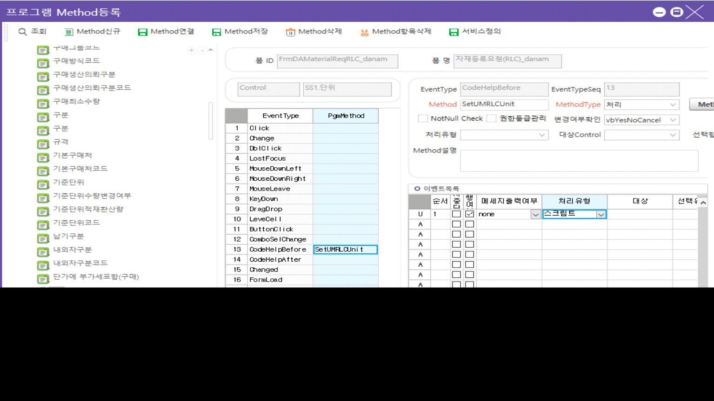

시트 콤보 / 코드헬프 파라미터 설정

if SS1.ActiveColumnName == 'UMRLCUnitName' then
SS1.ColumnCodeHelpParams = CellText(SS1, SS1.ActiveRow, 'UMRLCSeq')..'|||'
end
DROP PROCEDURE danam_SCACodeHelpRLCUnit
GO
CREATE PROCEDURE danam_SCACodeHelpRLCUnit
@WorkingTag NVARCHAR(1),
@LanguageSeq INT,
@CodeHelpSeq INT,
@DefQueryOption INT, -- 2: direct search
@CodeHelpType TINYINT,
@PageCount INT = 20,
@CompanySeq INT = 1,
@Keyword NVARCHAR(50) = '',
@Param1 NVARCHAR(50) = '', -- RLC 코드
@Param2 NVARCHAR(50) = '', --
@Param3 NVARCHAR(50) = '', --
@Param4 NVARCHAR(50) = '' --
AS
SET ROWCOUNT @PageCount
SELECT A.MinorName AS UMRLCUnitName
,A.MinorSeq AS UMRLCUnitSeq
FROM _TDAUMinor A WITH(NOLOCK)
LEFT OUTER JOIN _TDAUMinorValue B WITH(NOLOCK) ON B.CompanySeq = @CompanySeq
AND B.MinorSeq = A.MinorSeq
AND B.Serl = 1000001
LEFT OUTER JOIN _TDAUMinorValue C WITH(NOLOCK) ON C.CompanySeq = @CompanySeq
AND C.MinorSeq = A.MinorSeq
AND C.Serl = 1000002
LEFT OUTER JOIN _TDAUMinorValue D WITH(NOLOCK) ON D.CompanySeq = @CompanySeq
AND D.MinorSeq = A.MinorSeq
AND D.Serl = 1000003
WHERE A.CompanySeq = @CompanySeq
AND A.MajorSeq = 1028200
AND ((@Param1 = 1028164001 AND B.ValueText = '1')
OR (@Param1 = 1028164002 AND C.ValueText = '1')
OR (@Param1 = 1028164003 AND D.ValueText = '1')
)
AND (@Keyword = '' OR A.MinorName LIKE @Keyword +'%' )
ORDER BY A.MinorSeq
SET ROWCOUNT 0
RETURN